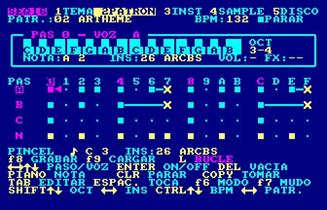
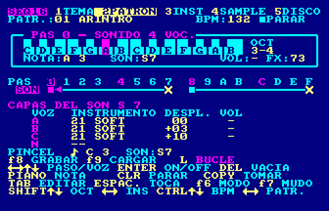
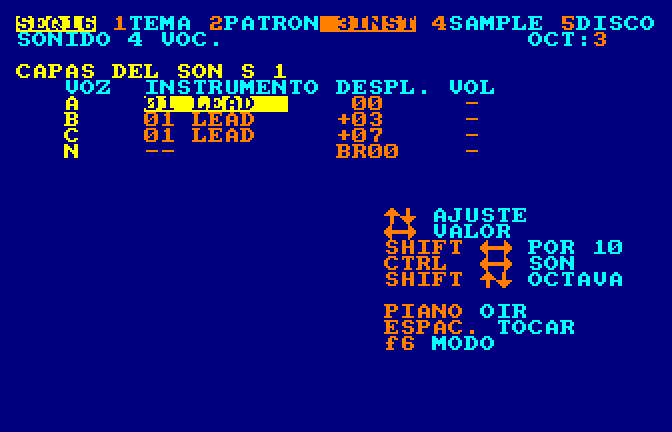
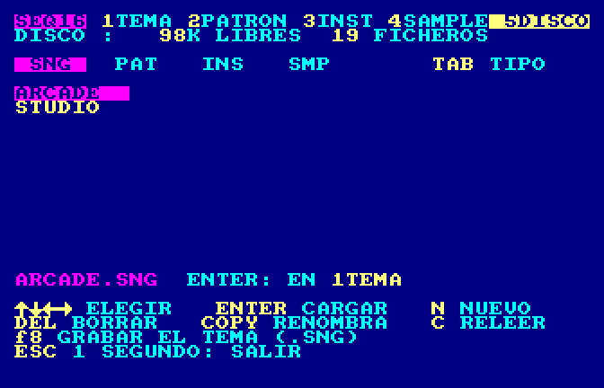
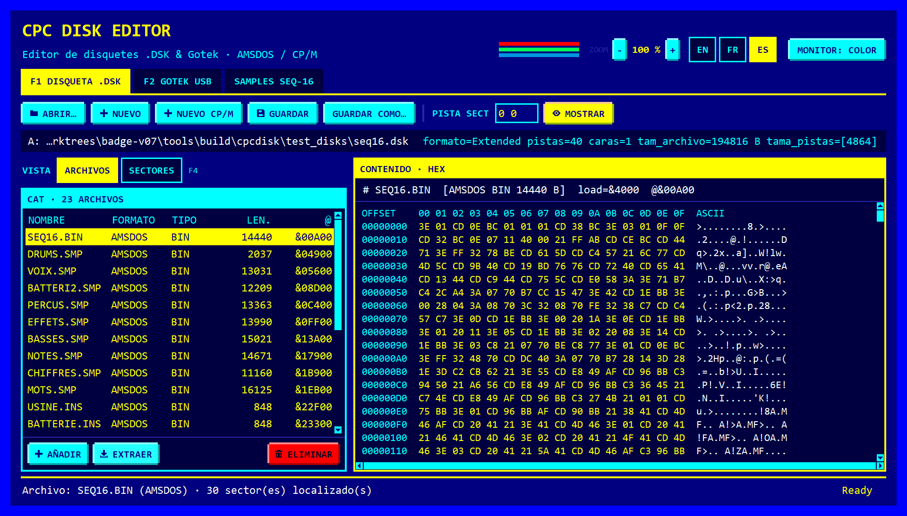
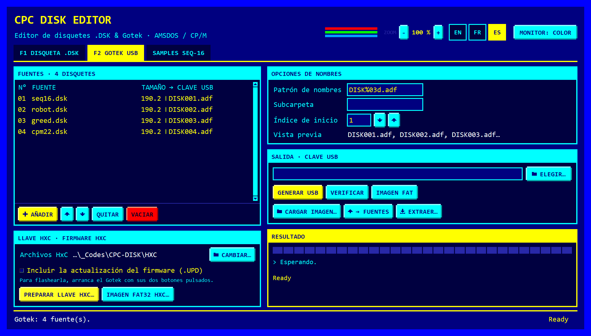
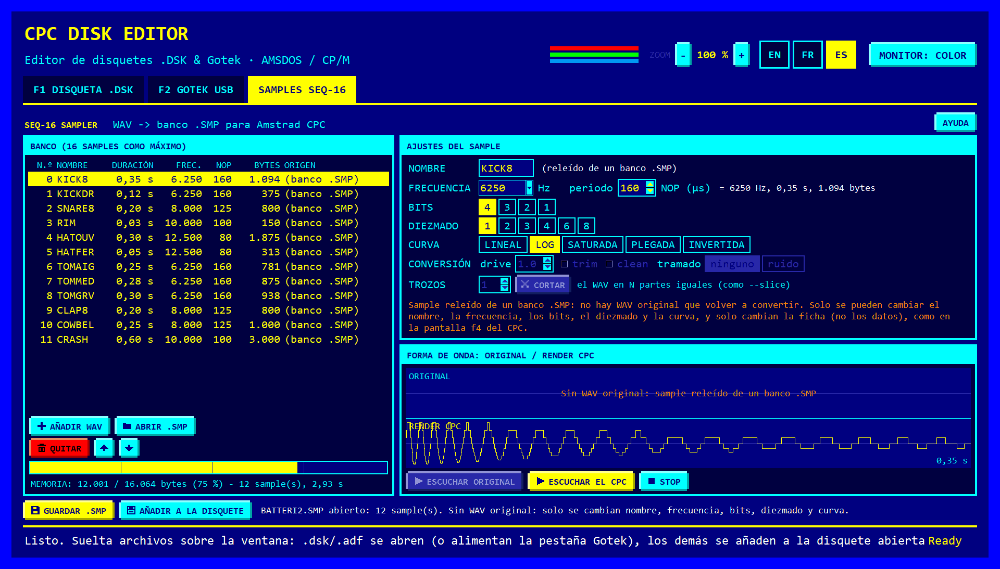

SECUENCIADOR CHIPTUNE · AMSTRAD CPC 6128
SEQ-16
Un secuenciador chiptune de 4 voces (3 tonos + ruido) para Amstrad CPC 6128, escrito en ensamblador Z80.
32 patrones de 16 pasos encadenados en un tema (64 posiciones, repeticiones, transposición, bucle), 32 instrumentos, 8 sonidos de 4 voces, 7 efectos por paso. Y un sampler que toca sonidos grabados de verdad en el chip de sonido del CPC, con un grano que se ajusta en directo: el sonido degradado es lo que se busca.
Luego, en el CPC (configurado como 6128 en un emulador):
Ready
RUN"SEQ16

Vídeo
Un recorrido de dos minutos, grabado en el CPC simulado con el programa real: el secuenciador, los instrumentos, el sampler, los patrones de fábrica, los digidrums, los sonidos de 4 voces… y el CPC que habla. El sonido se reconstruye a partir de cada escritura del programa en el AY-3-8912.
Funciones
Temas
El panel TEMA encadena los patrones: 64 posiciones, repeticiones, transposición, bucle, mezcla de las voces.
Patrones
32 patrones de 16 pasos en 4 voces (A, B, C y ruido N): nota, instrumento, volumen y efecto en cada paso.
7 efectos por paso
Sube, baja, arpegio, repite, corta, demora, vibrato: escritos en hexadecimal como en los trackers.
Instrumentos
32 instrumentos: envolvente dibujada en directo, ruido, envolvente hardware, arpegio, vibrato, glissando, portamento.
Sonidos de 4 voces
Una sola nota toca hasta 4 instrumentos a la vez; los 8 sonidos se editan voz por voz.
Sampler
El panel SAMPLE toca sonidos grabados (batería, voces…) con frecuencia, decimación, bits y curva ajustables.
Digidrums
Samples disparados en un paso como una nota; un tema .SNG lleva consigo su banco de samples.
Bancos y patrones
13 bancos de instrumentos (416 sonidos), 9 bancos de samples, 125 patrones de fábrica y un disco de demostración.
Máquina real
Funciona en un CPC 6128 de verdad (con una disquetera Gotek) o en un emulador, en español, francés o inglés.
Los cinco paneles
Cinco paneles, que se eligen con las teclas de función del teclado numérico; en cada uno, f8 graba y f9 carga.
Las capturas muestran la versión en español (seq16-es.dsk), con el tema ARCADE del disco de demostración.








Descargar
Los discos del programa están en la página de la última release; la demostración está en la carpeta build/ del repositorio. Cada imagen .dsk es un disco de CPC normal.
| Disco | Contenido |
|---|---|
seq16-es.dsk | SEQ-16 en español, con los 13 bancos de instrumentos y 8 de los 9 bancos de samples (CHIFFRES: en seq16-samples.dsk) |
seq16-fr.dsk | SEQ-16 en francés (version française), mismos bancos |
seq16-en.dsk | SEQ-16 en inglés (English version), mismos bancos |
seq16-demo-es.dsk | demostración: SEQ-16 en español y dos temas, ARCADE (sonido de 4 voces, los 7 efectos) y STUDIO (samples, voz); también en francés y -en |
seq16-inst.dsk | solo bancos: los 13 bancos de instrumentos .INS (sin el programa) |
seq16-samples.dsk | solo bancos: los 9 bancos de samples .SMP (sin el programa) |
seq16-motifs-mono.dsk | 62 patrones de fábrica mono (sonido de 4 voces) — panel PATRON, f9 |
seq16-motifs-poly.dsk | 63 patrones de fábrica poly (voces sueltas) — panel PATRON, f9 |
Mismo programa, mismos ficheros, mismas teclas en los tres idiomas: solo cambian los textos de la pantalla. Con un disco de bancos o de patrones, cambia de disco y luego f9 en el panel correspondiente (o el panel f5 DISCO).
En un emulador
- Descarga
seq16-es.dsk. - Mete el disco en un emulador (WinAPE, Caprice32, ACE-DL, RetroVirtualMachine…) configurado como CPC 6128.
- Escribe
RUN"SEQ16y RETURN.
Para salir, mantén ESC pulsada un segundo. Una pulsación sola no basta, para no perder el trabajo por error.
En un CPC de verdad con un Gotek
Copia seq16-es.dsk en la memoria USB de una disquetera Gotek (firmware FlashFloppy o HxC) y escribe RUN"SEQ16 en el CPC. La herramienta compañera CPC DISK prepara la memoria USB del Gotek.
En PC: CPC DISK
CPC DISK es la herramienta compañera: un editor de imágenes .dsk con aspecto de pantalla de CPC, en Python puro, sin dependencias. Sirve para:
- abrir
seq16-es.dsky recorrer su catálogo AMSDOS; - recuperar los temas
.SNGgrabados en el disquete, o añadir otros; - preparar el pendrive del Gotek (FlashFloppy, o uno para el firmware HxC);
- fabricar tus propios bancos de samples en su pestaña SAMPLES SEQ-16.
Descarga en la página de releases de CPC DISK: un programa de Windows (cpc-dsk-gui-1.2.0-windows-x64.exe) y un binario de Linux.



Tus propios bancos de samples a partir de WAV
La pestaña SAMPLES SEQ-16 de CPC DISK (en español, francés o inglés) fabrica un banco .SMP a partir de ficheros WAV, sin línea de comandos:
- A la izquierda, la lista de samples (16 como máximo): añadir WAV (Ctrl+W, varios a la vez), abrir un banco
.SMPexistente (Ctrl+O), quitar, subir, bajar. Un indicador muestra el espacio ocupado de los 16 064 bytes de memoria del CPC; se pone en rojo si el banco es demasiado grande. - A la derecha, los ajustes del sample elegido: nombre (6 caracteres), frecuencia, saturación, recorte de silencios, suavizado, tramado (dither), bits, decimación, curva, troceado. La forma de onda muestra el original arriba y el resultado del CPC abajo.
- Escuchar el original o el resultado del CPC.
- Grabar .SMP (Ctrl+S) y luego Añadir al disquete: se propone directamente el disquete abierto en la pestaña Disquete.
Con un banco .SMP abierto ya no hay WAV original: puedes cambiar el nombre, la frecuencia, los bits, la decimación y la curva, pero no los ajustes que exigen volver a convertir el sonido.
¿Prefieres la línea de comandos? tools/wav2smp.py (Python 3, solo la biblioteca estándar) convierte WAV mono o estéreo, de 8 o 16 bits, a cualquier frecuencia:
python tools\wav2smp.py mavoix.wav --trim --rate 6250 -o samples\MAVOIX.SMP --dskEl script escribe también un WAV de escucha, para oír el resultado en el PC antes de copiar el disquete. Opciones y ejemplos en el README.
Para desarrolladores
SEQ-16 está escrito en ensamblador Z80 y se ensambla con rasm. En Windows:
- Pon
rasm.exeentools\. - Pon el proyecto CPC DISK junto a este: SEQ-16 usa su biblioteca (
cpc_dsk) para escribir en los disquetes.tools/cpcdisk.pylo encuentra solo (o bienpip install -e ../CPC-DISK, o la variable de entornoCPC_DISK). - Ejecuta
build.bat(hace falta Python 3): ensamblasrc/main.asmy fabricabuild\seq16-fr.dsk,build\seq16-en.dskybuild\seq16-es.dskcon todos los bancos.
_Codes/
├── CPC-SEQ-16/ este proyecto
└── CPC-DISK/ el editor de disquetesLas pruebas ejecutan el programa real en un simulador Z80:
pip install z80
python -m unittest discover -s tools -p "test_*.py"Las traducciones están en tools/lang.py; python tools/lang.py --check señala los textos olvidados o demasiado largos. Todo lo demás (organización del código, formatos, hoja de ruta) está en el README del repositorio.
Agradecimientos
SEQ-16 y CPC DISK se apoyan en estos proyectos. ¡Gracias!
Herramientas y bibliotecas
- RASM — ensamblador Z80 de Édouard Bergé
- z80 — emulador Z80 para Python de Ivan Kosarev (ejecuta el CPC simulado de las pruebas)
- Ayumi — emulador del AY-3-8912 de Peter Sovietov (MIT); su tabla de volúmenes del DAC la usa el convertidor de samples
- eSpeak NG — síntesis de voz de los bancos de samples VOIX, CHIFFRES y MOTS
- Python & tkinter
- PyInstaller — ejecutables Windows/Linux de CPC DISK
- pytest
- dosfstools — fsck.fat / mkfs.fat, referencia para la escritura FAT16/FAT32 y sus pruebas
- Press Start 2P (CodeMan38), VT323 (Peter Hull) — fuentes, SIL Open Font License 1.1
Documentación y referencias
- CPCWiki — firmware del CPC, AY-3-8912, AMSDOS, formato de las imágenes DSK
- Un ejemplo de cargador, la Amstrad Whole Memory Guide (CPCWiki) y el manual del firmware del 6128 (SOFT968) — la rutina
MC START PROGRAMdel cargador - HxC2001 — firmware HxC para Gotek, selector de ficheros y documentación; fuentes del selector de ficheros
- FlashFloppy — firmware para Gotek
- Design of the FAT file system (Wikipedia, en inglés)
- Microsoft SHFormatDrive — cuadro de diálogo Formatear de Windows
Emuladores y disquetes usados para las pruebas
- WinAPE
- Internet Archive — imágenes de disquetes CPC reales, usadas como disquetes de prueba en CPC DISK